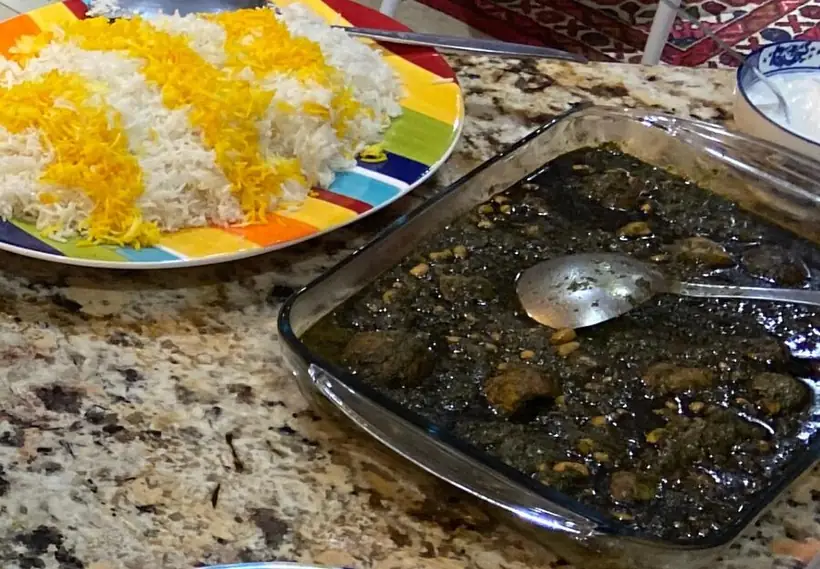

baked with love, from our kitchen to yours
Slow-simmered khoresht, saffron rice dishes, kofteh and appetizers, cooked after you order. Booking for a gathering or event? Message us your headcount and date and we'll help you build a full Persian menu.

Text us or DM us on Instagram with what you'd like and when you need it.
We'll confirm your order, any custom design or dishes, and your pickup date.
Pickup only — no delivery. Ask about same-day and next-day availability.
Yes. Message us your headcount and date and we'll help you build a full Persian menu.
Khoresht such as ghormeh sabzi, fesenjan and gheymeh; rice dishes such as baghali polo, zereshk polo and adas polo; kofteh tabrizi; appetizers like kashkeh bademjan and mirza ghasemi; and ash reshteh.
All orders are picked up in Katy, Texas. We don't deliver.